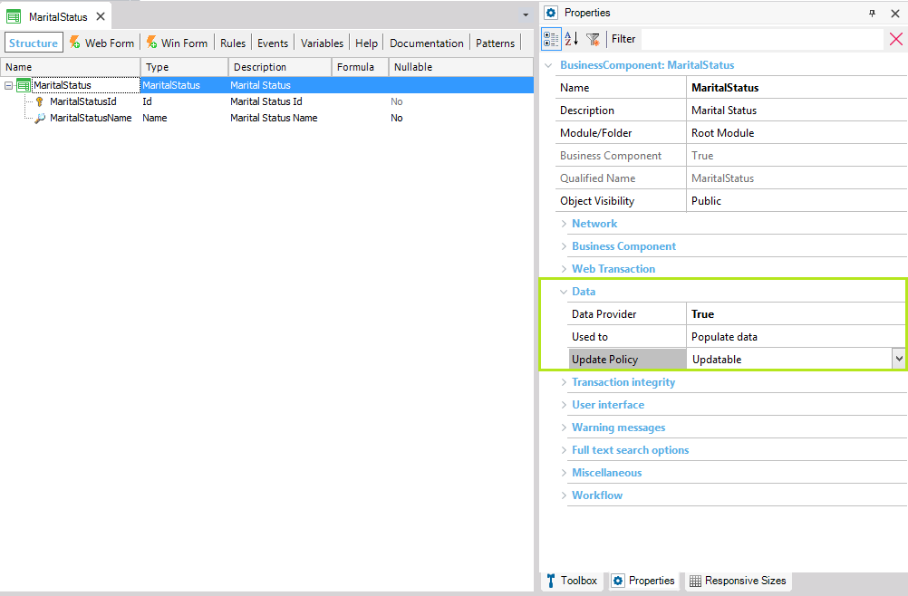

Defines the purpose of the Data Provider associated with the Transaction (it is offered only if the Data Provider property is set to True for the Transaction). Values
Scope Objects: Transaction Description
This property is offered under the 'Data' properties group available for Transactions, only if the Data Provider property (which is under the same group) is set to True. It allows defining the Data Provider associated with the Transaction purpose. The possible values of this property are: 1. Populate Data If you set this value, the Data Provider is executed to store the content in the physical table(s) associated with the Transaction. To carry out the data storage, GeneXus sets automatically the transaction Business Component property = True. It is important to know that the operation that will be performed -through the transaction executed as a business component- is an “upsert”. In other words, an insertion will be tried, but if it fails because a duplicated key is found, an update will be performed. The Data Provider may be executed several times, automatically:- every time a modification is detected in the physical table(s) it loads. The Data Provider execution is independent of the database creation/reorganization process. On the one hand, the tables are created/reorganized, and later, after each success build (F5), if it is necessary, the Data Provider is executed in order to populate. This is shown as "========== Populate Data started ========== " in the output. This automatic behavior can be avoided by setting Populate Data property to False. Because the Data Provider can be run several times, you have to define an idempotent behavior (regardless of the times the Data Provider is run, the result should be the same as if executed once). For instance, the following example shows a case in which content will always be loaded once no matter how many times the Data Provider is executed:  That is because the identificatory values (MaritalStatusId) were explicitly filled. If MaritalStatusId were an autonumber key, a Unique Index on a Candidate Key (for example, for MaritalStatusName) should be defined, to avoid storing several records with the same content. Besides being automatically executed whenever GeneXus detects it has to run it, you can also execute explicitly the MaritalStatus_DataProvider as shown:
Event 'Initialize'
&MaritalStatusCollection=MaritalStatus_DataProvider()
if &MaritalStatusCollection.InsertOrUpdate()
msg("Initialization SUCCESSFUL")
commit
else
msg("Initialization ERROR")
endif
Endevent
Note: Whenever you set the Used To property of a Transaction to Populate Data, GeneXus automatically sets the Main program property of the Data Provider associated with the Transaction to True.
If you set this value, no physical tables are created associated with this Transaction and we say it is a Dynamic Transaction. Run-time/Design-timeThis property applies only at design-time. CompatibilityThe Retrieve Data option is available as of GeneXus 15. The Populate Data option is available as of GeneXus 15 Upgrade 1. AvailabilityThis property is available since GeneXus 15. |